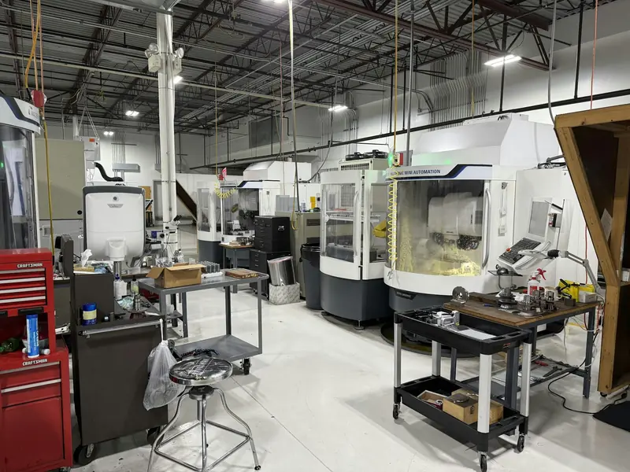
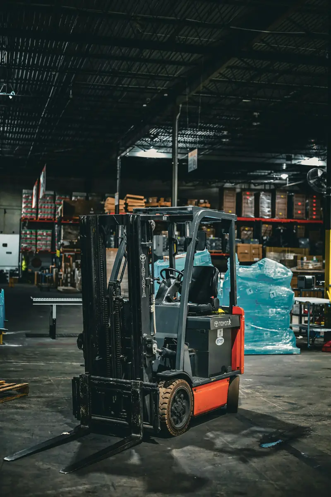
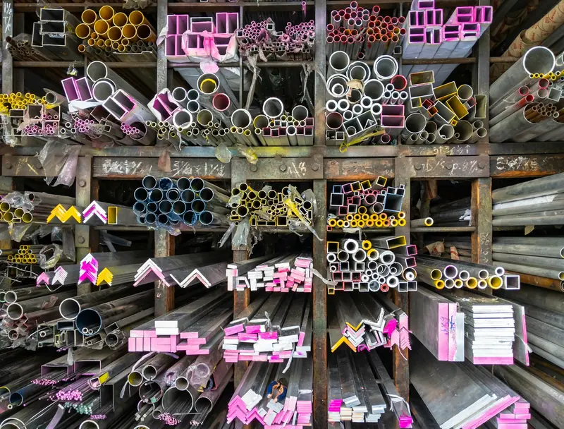

ОбразецПаспорт качества
Паспорт качества на партию
Химсостав, прочность, геометрия, номер плавки. Идёт с каждой отгрузкой.
Один корпус в Калуге: слиток заходит с одной стороны, готовый профиль в пачках уезжает с другой. Ниже — что стоит в цехе и как мы проверяем каждую партию.



Фото для примера.
Оборудование
| Участок | Оборудование | Что даёт вам |
|---|---|---|
| Прессование | Гидравлический пресс 1 600 т, печь нагрева слитков | профиль до Ø 180 мм, до 12 т в смену |
| Термообработка | Печь искусственного старения длиной 7 м | состояния Т1 и Т6 по ГОСТ |
| Резка | Две ленточные пилы, торцовочный станок с ЧПУ | ±0,5 мм, резка под углом |
| Обработка | Обрабатывающий центр с ЧПУ, сверлильные станки | отверстия, пазы, резьба |
| Лаборатория | Спектрометр, разрывная машина, твердомер | химсостав и прочность на каждую плавку |
| Склад | Консольные стеллажи на 2 000 позиций, кран-балка 5 т | отгрузка на следующий день |
Контроль качества
Документы
Ниже — образцы оформления документов, которые идут с каждой партией.
Химсостав, прочность, геометрия, номер плавки. Идёт с каждой отгрузкой.
Результаты разрыва образцов и спектрального анализа — по запросу к любой партии.
Подтверждение соответствия ГОСТ на профиль и прокат, с номером в реестре.
Для проверки контрагента службой безопасности — присылаем в день запроса.
Приезжайте посмотреть
Для закупщиков и технологов покажем пресс, лабораторию и склад — около часа. Договоритесь за день, оформим пропуск.
Удобно в будни с 9:00 до 15:00. Захватите обувь с закрытым носком — в цеху так положено.
Договориться о визите